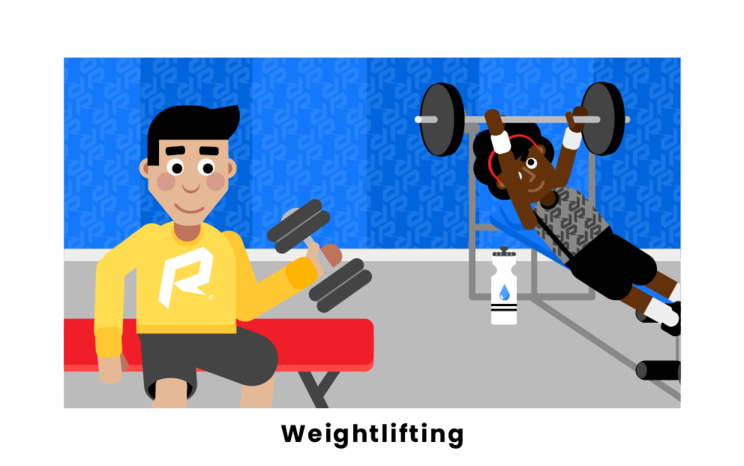

Weightlifting.
 A guide to a better you!
A guide to a better you!
What is weightlifting?
 Text Color
Weightlifting is a competitve sport where the human body is tested by
lifting heavy pieces of equipment. The history of weightlifting goes
back as far as recorded history goes. An example of ancient
weightlifting is where people
have a big rock they would try to lift, and the first one to lift it
would inscribe their name into the stone.
Since then weightlifting has advanced incredibly, from the equipment
used, to the excersises created to optomise strength and muscle growth.
Weightlifting joined the olympics in
1896 in the Athens Olympics Games.
This caused a larger attention
towards weightlifting and therefore turned it into a more competitve
sport with more people thriving to succeed in being the strongest,
having the best physique or just to be healthier and treat their bodies
better.